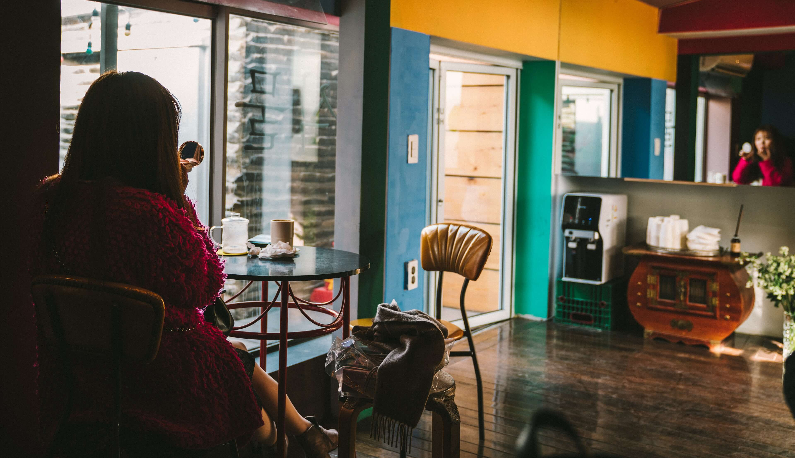
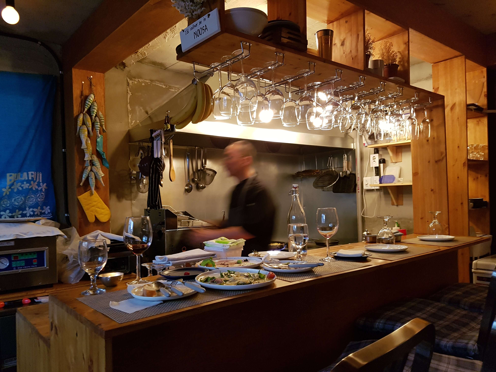
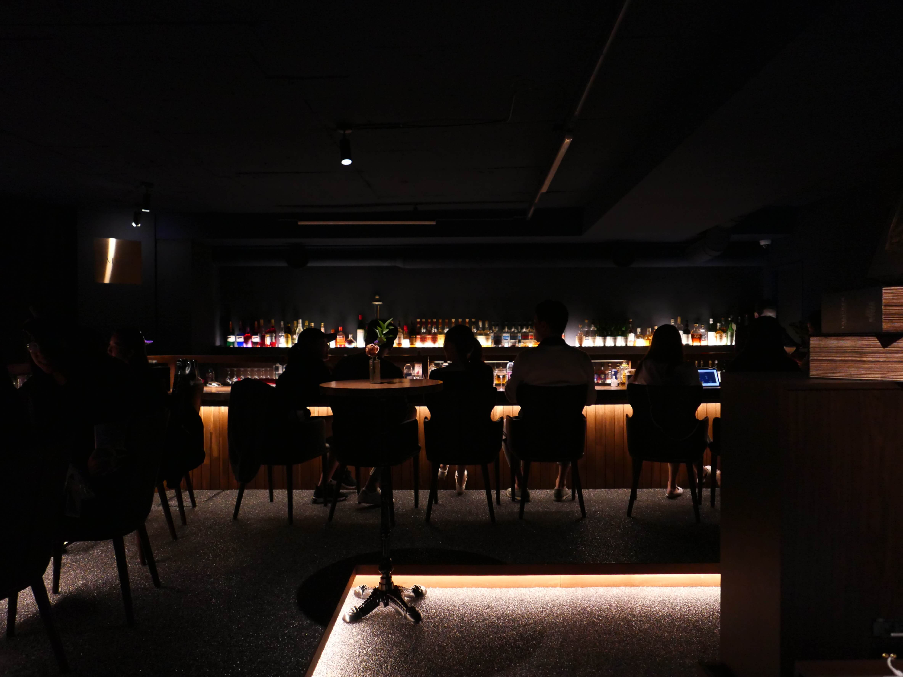

A guide to Seoul’s best hidden restaurants and bars
21 Feb 2023
Travel

Not far from the glare of the city center, the South Korean capital offers a wealth of cosy, cool hangouts, if you don’t mind ducking down alleys and opening a well-concealed door or two.
Seoul gleams with glass towers and brims with centuries-old architecture, but beyond the bright lights, it has a hidden intimate side, if you know where to look. Miles of winding back streets can lead you to a tucked-away cafe, a delicious new restaurant or an entire enclave ripe for exploring. All you have to do is take the first step.
Locals flock to two under-the-radar neighbourhoods in particular for their insider cachet: the downtown industrial hub Euljiro, which is dotted with back-alley bars and eateries, and Sinheung Market, an old street mall that’s getting a well-deserved makeover. (Both enclaves are within a few miles of the site of last Halloween’s tragic crowd crush in Itaewon, but neither typically draws the large numbers of revellers for which Itaewon has been known.)
In these two areas, getting off the main roads to explore will reward visitors with cocktail bars, restaurants and other nightspots whose outsize personalities defy their cosy confines.
Sinheung Market
Deep within the Yongsan district, in the enclave of Haebangchon (often shortened to HBC), the decades-old Sinheung Market is getting a refresh. The collection of mom-and-pop storefronts along winding alleyways is newly repaved, with a canopy of neon lights suspended above it, summoning curious drinkers and adventuresome diners. Still, bringing friends here feels almost like a betrayal — it’s so cosy and charming you want to keep it a secret. But the word is getting out: Lines and wait times are getting longer at the area’s cafes, roasteries, wine bars and cocktail lounges. Pop in on a weeknight for more elbow room.

Here are three tantalizing spots to discover around Sinheung Market.
— Thai spice and skyline views
Blink and you’ll miss the narrow door leading to Pad Kapaw, a restaurant that seats no more than 10 to 15 diners. The chef-owner, Sriprateep Paw, hails from a Thai family of restaurateurs, and he prides himself on serving authentic meals instead of the Korean-Thai fusion that’s more commonly found in this city. If you can snag a table, expect impeccable takes on classics like pad krapow, tom yum soup and pad kee mao, all perfect with a bottle of Singha beer (97-6 Sinheung-ro, second floor).
Ginn-Laoo, a sister restaurant and a more casual Thai bistro, opened in August around the alleyway from Pad Kapaw. Here, simpler specialties from the Isan region of north-eastern Thailand, like a palate-singeing papaya salad and a sweet-zesty beef noodle soup, are on offer. Don’t run off if the restaurant looks full (and tiny) at first glance: A hard-to-spot back patio offers a stunning view of the Seoul skyline — and neighbouring Pad Kapaw (99 Sinheung-ro, first floor).
— Classic cocktails with a fluffy friend
If both of Paw’s Thai restaurants are packed, join the waiting list then head to Gil Bar Dak, a darling drinking spot that even has its own mascot dog, often seen poking its head out the window. The bar’s proprietor, Kim Woo-sin, recently doubled the space of what had been an intimate one-unit storefront, installing an expansive counter for more room to enjoy some of the city’s most reasonably priced classic cocktails, including a Luxardo-cherry-adorned old-fashioned and a mojito with the ideal mint-lime balance. Stools perched outside sliding windows offer airy seating with a taste of the market atmosphere. Pro tip: You can bring in your own food or even get restaurant delivery at your table. Just keep an eye out for the fluffy grey Bedlington terrier who loves to sniff out human food (26-18 Sinheung-ro, 20-gil, first floor).

— Moss on the table, peat in the glass
One of the market’s newer outposts is Bar Harding, a handsome, signage-free whiskey bar. Pull back the luxe velvet drapes and find a one-room spirits library with bottles on backlit hardwood shelves and only eight seats around a raw-edged wooden table with moss in the centre. Whiskies like a spicy Highland Park and a peat-forward Laphroaig come in shots, 90-milliliter bottles and full bottles. For a place with such a minuscule kitchen (behind yet another velvet curtain), Bar Harding turns out surprisingly wonderful food, cooked and served by owner Ko Tae-won (he also owns Third Culture Club, the lively wine bar around the corner). A bundle of sesame-seed-sprinkled cold spinach in soy sauce cooled the fire of our chosen whiskey, which itself cut through the oil in a crisp fried mung bean pancake. Gather your friends and take over this place for an immersive experience. (Reservations are recommended, but walk-ins are welcome on slower nights.) Once you’re past those curtains, the sounds of the street market fade away and, as with so many of these hidden treasures, you get a sense that your explorations have led you, at least for an evening, to your own private Seoul (95-15 Sinheung-ro, first floor).
Euljiro
Tread carelessly in Euljiro, an area just off the business district in central Seoul, and you’re bound to walk right into one of dozens of grizzled, stubble-faced motorcyclists transporting stacks of fresh newsprint or machine cogs through these narrow streets still packed with print and manufacturing businesses.
But turn down the right alley and push the right door and you could find a candlelit wine lounge with a veranda perfect for stargazing. That magic has earned this enclave the nickname Hipjiro, where tucked-away watering holes and casually chic eateries entice native Koreans and foreigners in equal measure.
The trickier it is to locate a destination, the more stylish you can bet it is. But no matter where you go, the dress code is usually low-key – one of the best parts of lounge life in Seoul.

The area is changing quickly as redevelopment projects target older buildings, so get there fast. Here are three Euljiro spots worth peeking around the right corner to find.
— Vinyl vibes and disco shine
Marked by only a short sandwich board out front with a red beacon behind it, the music-forward lounge the Edge is easy to walk past, but it’s well worth the careful climb up steep metal stairs reminiscent of a New York City fire escape. The Edge is part vinyl shop, part bar – all laid-back –serving coffee by day and beer and cocktails by night, often with a DJ keeping the beat. The vibe is sedate and less see-and-be-seen than it is watch-and-chill-with-friends. Sit among the boxes of records in the back or at the bar to gaze at the disco ball. Soak in its glow as you nibble on a plate of meat and cheese or sip a cold-brew-coffee-accented Negroni or a Scotch ale. To satisfy bigger appetites, the owner, Antoine Le Toumelin, debuted a restaurant last fall with a similarly chill vibe, also called the Edge, two floors down. Check the lounge’s Instagram to see the coming weekend’s slate of DJs (Samjin Building, 8 Eulji-ro, 12-gil, third floor).
— Straight-up Madison Avenue
A barely lit wooden door adorned with only a traditional carved-window design is all that indicates something might exist at Bar SookHee. Opening it reveals a staircase that appears to lead you onto the set of “Mad Men,” complete with a bar that extends the length of the room, fronted by chunky leather armchairs and backed by dapper drink masters in ties. Whiskey is the specialty here, as evidenced by the bottles sharing wall space with art by owner Lee Soo-won’s mother, and a short list of drinks, featuring seasonal fruits, is available on a printed scroll.
A second location, in nearby Myeong-dong, is tantalizingly harder to find, hidden on a seemingly vacant floor above a Starbucks. Both branches serve tempting entrees and snacks. Don Draper would be proud – and possibly able to visit soon: Lee has his sights set on opening an outpost in New York City. For now, enjoy the Euljiro branch while you can. It’s relocating to a yet undetermined location in March (Eulji-ro: 23 Samil-daero, 12-gil, second floor; Myeong-dong: 7-9 Myeong-dong, 10-gil, fourth floor).
— Enter through the clothes shop
Finding the racy restaurant-wine bar at the back of the Ajobyajo Fink Label clothing boutique should help you forget, if not forgive, the nightspot’s unprintable name. Pass racks of streetwear and ascend the stairs: An image of a biker wearing no bottoms signals you’re at the right place. A sleek, low-lit room awaits beyond the door, with giant aquariums below the bar drawing your eye and hinting at the seafood-heavy menu, which includes entrees like udon with uni and salmon, mixed seafood tartare, and raw oysters in grape granita. (Owner Hwang In-seop’s kitchen retooled the menu in December, also adding sashimi and steak to the mix.) The lounge also offers a hefty list of natural wines. With city vistas, flickering candles and statues set into the wall, the rooftop dining area is even sexier than the indoor space, even without the floor-to-ceiling photo of bare glutes marking the entrance (42-21 Supyo-ro, fourth floor).
Photography retrieved from Unsplash
Content retrieved from Channel News Asia (CNA Luxury) / The New York Times